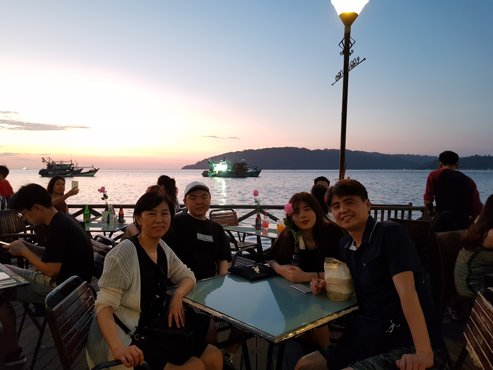

2/23일 아침 7시 40분 비행기를 타고 출발하였고, 코타키나발루에는 약 11시30분경에 도착했다. 도착후 USIM칩을 갈아 끼우고, 공항에서 약 3만원 정도를 환전했다.
그리고 그랩을 불러서 힐튼호텔에 도착했다.
도착 후, 짐을 풀고 근처에 있는 Seafood 레스토랑에 가서 새우, 오징어튀김, 가리비 등을 사먹었다.
다른 것은 맛이 그저 그랬는데, 오징어튀김은 부드러운면서도 싱싱했고, 한국에서 먹어본 어떤 오징어튀김보다 맛이 있었다.
아래는 오징어튀김의 사진이다.